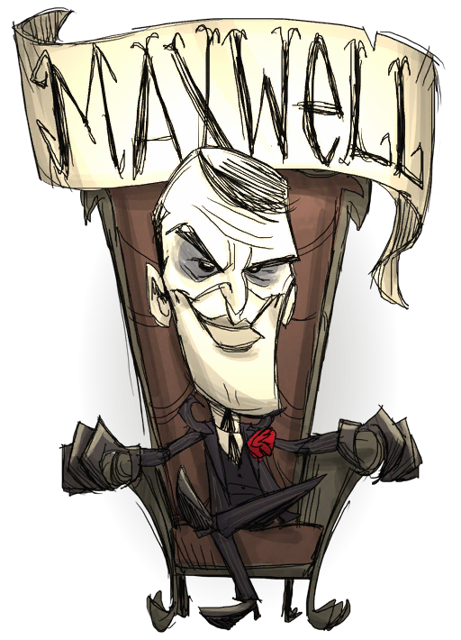

150 200 75
麦克斯维尔是整个饥荒世界的主宰，具有极高的理智值，一般的饥饱值和很低的生命值（75血） 理智值每分钟会上升20点。除了暗影剑（Dark Sword）、暗影盔甲（Night Armor）、一个紫宝石和四个梦魇燃料之外，麦斯威尔一开始也拥有他自己的书《暗影法典》（Codex Umbra），让他可以分离自己的灵魂。
《暗影法典》和薇可巴顿女士（Ms. Wickerbottom）的书作用类似，但无限时效。使用这本书可以让一个影子人偶（以麦克斯维尔的形象）出现。每用一次便会耗损15点生命值和两个噩梦燃料。每个影子人偶会耗损麦斯威尔55点理智值。因此玩家最多可以召唤三个影子人偶，这时麦克斯维尔会只剩35点理智值，并无法再召唤更多人偶。每个影子人偶可以存活2.5个游戏天。它们可以协助麦斯威尔战斗、挖矿和砍树。每死一个影子人偶，麦斯威尔的理智值就会回升55点。召唤数个影子人偶使理智值下降是个让麦斯威尔陷于低理智状态的好方法。因为麦克斯维尔通常会自己回升理智值。
因为麦克斯维尔可以自己回升理智值，所以玩家们可利用他进行耗损理智值的活动。比如说，摘邪恶之花、使用传送魔杖和杀死怪物。麦克斯维尔不需穿着回理智值的装备（例如苏格兰帽），他在戴着足球头盔时仍能迅速回升理智值。这些优势让他比其他角色更适于探索地洞和在夜晚行动，因为夜晚和一片漆黑带来的理智值下降对他来说不是问题。由于麦斯威尔的生命值只有威尔森的一半，因此在游戏初级阶段，玩家在和危险怪物战斗（例如猎狗、初级怪物boss）时应穿着暗夜盔甲（Night Armour），它可减少95%的战斗伤害。再加上他的暗夜剑（Dark Sword），麦克斯维尔显然是绝佳的战斗角色（在他的暗影盔甲和暗影剑用完之前）。麦克斯维尔也可比其他角色更快制作出暗影操纵者（Shadow Manipulator），因为在游戏开始之时他就自带一个紫色宝石和噩梦燃料，减少了搜集原料所需的时间。这让玩家可尽快重新制造新的暗影剑和暗影盔甲。麦克斯维尔最为人所知的优势则是使用《暗影法典》（Codex Umbra），消耗噩梦燃料、生命值和理智值召唤影子人偶。这些影子人偶可以协助玩家进行各种活动和战斗，并可存活2.5个的游戏天。然而重新搜集噩梦燃料对麦克斯维尔来说却是困难的，因为他的理智值会一直自动回升。一个让麦斯威尔下降理智值的有效方法是同时穿着暗影剑和暗影盔甲，这会使他的理智值以每分钟-10的速度下降。召唤影子人偶使麦克斯维尔的理智值下降也是一个好方法，但需要消耗噩梦燃料。在晚期游戏阶段，玩家可在遗迹的噩梦循环中轻易搜集大量噩梦燃料。在循环的平静状态中，影子怪物仍能提供玩家数量可观的梦魇燃料。